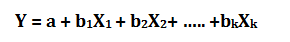
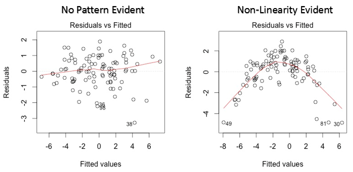

Linear Regression is used for predictive analysis. It is a technique which explains the degree of relationship between two or more variables (multiple regression, in that case) using a best fit line / plane.
Regression technique tries to fit a single line through a scatter plot. The simplest form of regression with one dependent and one independent variable is defined by the formula:
Y = aX + b
Regression line establishes a relationship between independent and dependent variable(s). A line which can explain the relationship better is said to be best fit line.
The best fit line tends to return most accurate value of Y based on X i.e. causing a minimum difference between actual and predicted value of Y (lower prediction error).
Here are some methods which check for error:
Coefficients a and b are derived based on minimizing the sum of squared difference of distance between data points and regression line
There are two common algorithms to find the right coefficients for minimum sum of squared errors,
1. Ordinary Least Sqaure (OLS, used in python library sklearn)
2. Gradient descent
Most common metric to judge the performance of regression models is R-square. R² measures, “How much the change in output variable (y) is explained by the change in input variable(x)."
R-squared is always between 0 and 1:
In general, higher the R², more robust will be the model.
One disadvantage of R-squared is that it can only increase as predictors are added to the regression model. This increase is artificial when predictors are not actually improving the model’s fit. To cure this, we use “Adjusted R-squared”.
Adjusted R-squared is the change of R-square that adjusts the number of terms in a model.
where
R2 = Sample R square
p = Number of predictors
N = total sample size
Process to deal with multiple independent variables related to a dependent variable.
In an multiple regression model, we try to predict
Here, b1, b2, b3 …bk are slopes for each independent variables X1, X2, X3….Xk and a is intercept.
#Import Library
#Import other necessary libraries like pandas, numpy
from pandas import Series, DataFrame
from sklearn.model_selection import train_test_split
from sklearn.linear_model import LinearRegression
#Load Train and Test datasets
#Identify feature and response variable(s) and values must be numeric and numpy arrays
import test and train file
train = pd.read_csv('Train.csv')
test = pd.read_csv('test.csv')
#splitting into training and cv for cross validation
X = train.loc[:,['Outlet_Establishment_Year','Item_MRP']]
x_train, x_cv, y_train, y_cv = train_test_split(X,train.Item_Outlet_Sales)
# Create linear regression object
lreg = LinearRegression()
# Train the model using the training sets and check score
lreg.fit(x_train,y_train)
lreg.score(x_train, y_train)
#Equation coefficient and Intercept
print('Coefficient: \n', lreg.coef_)
print('Intercept: \n', lreg.intercept_)
#Predict Output
pred = lreg.predict(x_cv)
#calculating mse
mse = np.mean((pred - y_cv)**2)
# calculating coefficients
coeff = DataFrame(x_train.columns)
coeff['Coefficient Estimate'] = Series(lreg.coef_)
coeff
Regression is a parametric approach. ‘Parametric’ means it makes assumptions about data for the purpose of analysis.
Let’s look at the important assumptions in regression analysis:
Let’s dive into specific assumptions and learn about their outcomes (if violated):
Linear and Additive:
If you fit a linear model to a non-linear, non-additive data set, the regression algorithm would fail to capture the trend mathematically, thus resulting in an inefficient model. Also, this will result in erroneous predictions on an unseen data set.
How to check: Look for residual vs fitted value plots (explained below). Also, you can include polynomial terms (X, X², X³) in your model to capture the non-linear effect.
Autocorrelation:
The presence of correlation in error terms drastically reduces model’s accuracy. This usually occurs in time series models where the next instant is dependent on previous instant. If the error terms are correlated, the estimated standard errors tend to underestimate the true standard error.
If this happens, it causes confidence intervals and prediction intervals to be narrower.
Also, lower standard errors would cause the associated p-values to be lower than actual. This will make us incorrectly conclude a parameter to be statistically significant.
How to check: Look for Durbin – Watson (DW) statistic. It must lie between 0 and 4. If DW = 2, implies no autocorrelation, 0 < DW < 2 implies positive autocorrelation while 2 < DW < 4 indicates negative autocorrelation. Also, you can see residual vs time plot and look for the seasonal or correlated pattern in residual values.
Multicollinearity:
This phenomenon exists when the independent variables are found to be moderately or highly correlated. It becomes difficult to find out which variable is actually contributing to predict the response variable.
Another point, with presence of correlated predictors, the standard errors tend to increase. And, with large standard errors, the confidence interval becomes wider leading to less precise estimates of slope parameters.
Also, when predictors are correlated, the estimated regression coefficient of a correlated variable depends on which other predictors are available in the model. If this happens, you’ll end up with an incorrect conclusion that a variable strongly / weakly affects target variable. Since, even if you drop one correlated variable from the model, its estimated regression coefficients would change. That’s not good!
How to check: You can use scatter plot to visualize correlation effect among variables. Also, you can also use VIF factor. VIF value <= 4 suggests no multicollinearity whereas a value of >= 10 implies serious multicollinearity. Above all, a correlation table should also solve the purpose.
Heteroskedasticity:
The presence of non-constant variance in the error terms results in heteroskedasticity. Generally, non-constant variance arises in presence of outliers or extreme leverage values. Look like, these values get too much weight, thereby disproportionately influences the model’s performance. When this phenomenon occurs, the confidence interval for out of sample prediction tends to be unrealistically wide or narrow.
How to check: You can look at residual vs fitted values plot. If heteroskedasticity exists, the plot would exhibit a funnel shape pattern (shown in next section). Also, you can use Breusch-Pagan / Cook – Weisberg test or White general test to detect this phenomenon.
Normal Distribution of error terms:
If the error terms are non-normally distributed, confidence intervals may become too wide or narrow. Once confidence interval becomes unstable, it leads to difficulty in estimating coefficients based on minimization of least squares. Presence of non – normal distribution suggests that there are a few unusual data points which must be studied closely to make a better model.
How to check: You can look at QQ plot (shown below). You can also perform statistical tests of normality such as Kolmogorov-Smirnov test, Shapiro-Wilk test.
Residual vs Fitted Values
Solution: To overcome the issue of non-linearity, you can do a non linear transformation of predictors such as log (X), √X or X² transform the dependent variable. To overcome heteroskedasticity, a possible way is to transform the response variable such as log(Y) or √Y. Also, you can use weighted least square method to tackle heteroskedasticity.
x_plot = plt.scatter(pred_cv, (pred_cv - y_cv), c='b')
plt.hlines(y=0, xmin= -1000, xmax=5000)
plt.title('Residual plot')
Normal Q-Q Plot

This q-q or quantile-quantile is a scatter plot which helps us validate the assumption of normal distribution in a data set. Using this plot we can infer if the data comes from a normal distribution. If yes, the plot would show fairly straight line. Absence of normality in the errors can be seen with deviation in the straight line.
Solution: If the errors are not normally distributed, non – linear transformation of the variables (response or predictors) can bring improvement in the model.
Scale Location Plot

This plot is also used to detect homoskedasticity (assumption of equal variance). It shows how the residual are spread along the range of predictors. It’s similar to residual vs fitted value plot except it uses standardized residual values. Ideally, there should be no discernible pattern in the plot. This would imply that errors are normally distributed. But, in case, if the plot shows any discernible pattern (probably a funnel shape), it would imply non-normal distribution of errors.
Solution: Follow the solution for heteroskedasticity given in plot 1.
Residuals vs Leverage Plot

Also known as Cook’s Distance plot. Cook’s distance attempts to identify the points which have more influence than other points. Such influential points tends to have a sizable impact of the regression line. In other words, adding or removing such points from the model can completely change the model statistics.
Solution: For influential observations which are nothing but outliers, if not many, you can remove those rows. Alternatively, you can scale down the outlier observation with maximum value in data or else treat those values as missing values.